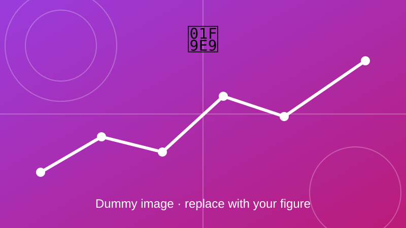

Distribution Grid Digital Twin using OpenDSS
An EV charging digital twin on IEEE distribution feeders, studied with Monte Carlo simulation.

Overview
This work integrates an EV charging digital twin with IEEE distribution feeder models in OpenDSS to evaluate voltage regulation, transformer loading and hosting capacity under different EV penetration scenarios using Monte Carlo simulations.
Objectives
- Build a feeder model that mirrors the real network.
- Vary EV penetration and charging behaviour in many random scenarios.
- Report the probability of voltage and loading violations.
Method and key equations
The feeder is solved with the standard AC power-flow equations. Each Monte Carlo run draws random EV locations and charging times, and the results are collected to estimate hosting capacity.
Active power injected at bus \(i\), where \(G_{ij}\) and \(B_{ij}\) are the conductance and susceptance of the admittance matrix and \(\theta_{ij}\) is the voltage angle difference.
The matching reactive power equation.
Monte Carlo estimate over \(M\) runs: the share of runs where the voltage at bus \(i\) leaves its allowed band.
Hosting capacity is the largest number of EVs the feeder can take without breaking voltage or transformer limits.
Outcome
Add your results here: key findings, figures, and links to the related paper or code.